8 Data Visualization
8.1 Learning Objectives
After this lesson, you should be able to:
For data visualization principles:
* Explain when, and why, to use a data visualization
* Describe common features of “good” data visualizations
* Identify principles of visual perception that can be used to make effective and expressive plots
* Compare the features and utility of various plot types
* Choose an appropriate kind of plot based on the data
* Know where to go for more resources on making accessible and equitable data visualizations.
For data visualization with ggplot2:
* Explain the grammar of graphics
* With the ggplot2 package:
+ Make various kinds of plots
+ Save plots
* Choose an appropriate kind of plot based on the data
* Use factors to reorder axes
8.2 Principles & Perception
Data visualization is the graphical display of abstract information to help us make sense of phenomena and to communicate these findings. It is a powerful tool to help us uncover and share the stories of our data. Visualizations help us retain and analyze all the information in our data, uncover and share our insights, and describe our research in a useful way. If a picture is worth a thousand words, then a good data visualization is worth millions.
But, how many of us have ever taken a course explicitly on data visualization? It’s typically not taught in standard data analysis courses, yet it is a mainstay for nearly every sector in today’s data-driven world. Today we’ll dive into the what, how, and why of data visualization and describe some best practices that you can immediately implement into your research workflows. Along the way we’ll also focus on building up our collective data literacy skills, and employ critical approaches to produce science that is more robust, transparent, and equitable.
8.2.1 A Brief History of Data Visualization

Image by Jose Barcelona - Own work, CC BY-SA 4.0
Data visualization is not a modern invention. Quantitative information display has been traced back to prehistory with the locations of stars mapped on the Lasaux cave drawings. Clay tokens, quipu, and stick charts dating back as far as 5500 BC also illustrate our long history of creating shared representations of data. The oldest known data visualization dates to 1160 BC with the Turin Papyrus Map, which accurately illustrates the distribution of geological resources in a region in Egypt. These earliest forms of data visualization served purposes of navigating culture and living within society - from accounting to agriculture, transportation, religion, and medicine. They were used to help us explore and understand natural phenomena and the workings of the universe.
{kind=link}
{kind=link}
{kind=link}
{kind=link}
The French philosopher Rene Descartes is attributed as developing the precursor to today’s modern plot in the 17th century - a two-dimensional coordinate system for displaying values. Later in the 18th century William Playfair began creating left to right oriented plots, allowing the viewer to explore how values change over time. He’s also attributed to inventing the bar graph and, unfortunately, the pie chart (we’ll get to why that’s unfortunate, later). Into the 19th and 20th centuries we see an explosion of chart types
Unsurprisingly, the invention of tools like paper and computers shaped our relationship with knowledge and information, playing a strong role in how we collect, analyze, store and visualize data. As we gather more and more complex data, we seek more ways to visualize its meaning and in the 19th and 20th centuries we see an explosion of chart types and techniques for communicating with statistical graphics.
For a more complete history of data visualization, check out “Milestones in the history of thematic cartography, statistical graphics, and data visualization”, by M. Friendly.
In particular, check out the following famous data visualizations.
8.2.1.1 Famous Data Visualizations
Florence Nightingale, the “mother of nursing,” produced in 1857 a rose diagram depicting seasonal sources of British soldier’s fatalities in the Crimean War. Out of the 18,000 soldiers who had died, 16,000 had died of disease in a hospital (blue shading) rather than from their wounds (black shading). This image is credited with helping to persuade the British government to improve conditions in military hospitals.
 The context surrounding this rose diagram is actually quite bit more complex. For additional background, [check out this podcast](https://99percentinvisible.org/episode/florence-nightingale-data-viz-pioneer/transcript/] based on the book The Data Detective by Tim Harford.
The context surrounding this rose diagram is actually quite bit more complex. For additional background, [check out this podcast](https://99percentinvisible.org/episode/florence-nightingale-data-viz-pioneer/transcript/] based on the book The Data Detective by Tim Harford.
John Snow, a London physician, traced the source of an 1854 cholera outbreak in Soho. By examining the locations of reported cholera deaths, Snow demonstrated that the disease was connected to a contaminated well on Broad Street, contributing to growing understanding that cholera was a waterborne disease and not caused by foul ‘miasmas’ in the air. He later used a map in his publication to show the concentration of the cholera cases around the contaminated pump. On this map, the height of the dark bars correspond to the number of deaths at a given location. While Snow didn’t invent the mapping technique of layering thematic data on top of topographic maps, nor actually compose the map himself (it was created by cartographer Charles Cheffins), this map was so effective that history often calls Snow the “father of epidemiology.” Learn more about the history of the map in this recent post by Kenneth Field.

Lastly, no discussion of the history of data visualization is complete without a nod to Charles Minard’s acclaimed depiction of Napoleon Bonaparte’s ill-fated invasion of Russia. Edward Tufte declared in his popular 1983 book The Visual Display of Quantitative Information that Napoleon’s March “may well be the best statistical graphic ever produced.” The thick band denotes the size of the army at each position, beginning at the Polish-Russian border. The dark lower band is tied to temperature and time scales, and shows the path of Napoleon’s retreat from Moscow and shrinking army size during the bitterly cold winter.

This image has also been recreated with modern plotting software, including the ggplot2 package in R, which you will learn about in the next lesson.

8.2.2 What is Data Visualization?
At their core, data visualizations are products that:
- Represent data.
- Have a specific purpose.
- Tell a data-driven story.
There are two main types of data visualizations. Information visualizations (aka infographics or infoviz) tend to be visually striking, dramatizing a problem with unique and visually appealing imagery that draws the casual viewer in. In contrast, statistical graphics aim to make comparisons, to reveal patterns and discrepancies. We use statistical graphs to communicate our research results, often for viewers who are already immersed or interested in the problem. While many topics within this reader will apply to infoviz as well, our emphasis is on creating judicious and accurate statistical graphics. (For more info comparing infoviz and statistical graphs, see Gelman and Unwin 2013.)
8.2.2.1 Why viz?
There are lots of ways to represent our data. In fact, tables are often the most common way to report data, and they are great at conveying exact values. But, interpretation of data displayed in a table is largely up to the viewer. It’s hard to perceive the overall summary of the data from a table, unless it’s really simple and, in that case, you often don’t even need a table and can just report those statistics as text.
Data visualization, on the other hand, takes advantage of our ability to process information by shifting the balance between our natural perceptive and cognitive abilities to convey a specific message. Most of the information that’s sent to our brains is visual. In fact, it’s been found that the human brain processes visual imagery 60,000 times faster than text! Data visualizations allow us to move from a predominantly thinking perspective to a seeing perspective. The cerebral cortex, which primarily handles our cognition, is slow and less efficient than the visual cortex, which processes images. Thus, visual diagrams are often easier for us to process than pages of words describing our research. Absorbing information quickly allows us to make novel inferences, and make more productive and informed decisions. Not surprisingly, well composed data visualizations are the most effective type of scientific communication.
For guidance on how to convert a table into a plot, see this paper by Andrew Gelman.
Ultimately, the utility of a data visualization depends on how well it’s composed.
8.2.2.2 Good data visualizations
- Provide rapid access to data.
- Faithfully represent the data and tell a story.
- Are expressive.
- Are effective.
Helpful data visualizations intuitively, clearly, accurately, and efficiently explain complex ideas. The patterns and relationships presented must be valid, and the visual relevant to the data it presents. A data visualization cannot exist without a narrative, and good data visualizations always include context. Good plots grab our attention and create a positive visual impact. This aids our ability to make connections and recall the features of the data. They can be aesthetically pleasing but that’s not the end goal. Good plots are accessible (not everyone perceives the visual world the same way). They leverage aspects of human perception to allow for intuitive inference of relationships between abstract concepts (our data).
Want to feel inspired? Check out Information is Beautiful and Flowing Data.

8.2.2.3 Bad data visualizations
- Have too much, or too little, information.
- Are inconsistent.
- Ignore limits of human perception.
- Misrepresent the data.
- Use inappropriate (or garbage) data.
Have you ever seen a pie chart where the labeled slices add up to something other than 100%? That’s a poorly executed data visualization. Goal: don’t end up on WTF Viz.

8.2.3 Before You Viz, Make a Plan
Modern software makes it easy to quickly create a plot. But before you fire up your computer and start plotting, stop and think. Write out your visualization plan. This will save you time in the long run, and result in a more robust data visualization.
Ask yourself:
- Why am I making this visualization? (purpose)
- Who am I making it for? (audience)
- How will I use and share it? (medium)
- What can I use to make it? (tools)
- What story does it tell? (message)
- Who does it affect? Who is left out? (critical approach)
How many plots you need is always the wrong question. You need exactly as many as you need to tell your story.
8.2.3.1 Purpose
First, identify why you are making a visualization. We use data visualizations in different ways across the iterative steps of the research data pipeline:

- Collection - plots can help us understand who, what, and where the data represent. It can help us track our progress, and help us project required effort to complete this phase of the project.
- Cleaning - plotting is a quick and effective way to spot errors in our data. It allows us to grasp the extent of issues such as outliers and missing data.
- Exploration - plots are a powerful tool for exploratory data analysis (EDA). Plots help us identify patterns, summarize variables and relationships. (see Tukey 1960)
- Confirmation - plots also help us conduct confirmatory data analysis (CDA). We can plot diagnostics like the model fit, residuals, and model comparisons that confirm whether a model is correct. CDA is an iterative process over the course of research, one reason why we advocate using scripting languages and other reproducible workflows for generating graphics.
- Validation - plots also help us to debug and validate our code. We can visually inspect the results at each step of the code we are writing and verify whether it satisfies our expectations.
- Communication - sharing the insights from our data with others is probably the most commonly understood and emphasized purpose of data visualizations. This is also often the hardest type of data visualization to “get right,” because we don’t always remember to design the visual to speak specifically to who we are sharing it with.
8.2.3.2 Audience
Who are you making the data visualization for? There is no such thing as a “generic” data visualization. Are you making the figure for yourself to help you clean or explore your data? For your immediate colleagues or research team to update them on your research progress? For experts in your field reading your publication or listening to your presentation? Is it for a general audience as part of your public outreach? What about policy makers who might not know all the details but might be making big decisions based on your results? Knowing who you’re making the visualization for will help you think through the following steps to create something of value for your intended purpose. It will also help you determine how effort is needed to compose a plot to achieve your goal.
8.2.3.3 Medium
There are always constraints when creating a data visualization. It’s best to discover these before you start, rather than after you’ve created a beautiful data visualization that’s completely inappropriate for your intended use. For example, if you are creating the visual to accompany a journal article, you probably need to use a static figure and not an interactive or dynamic dashboard. Does your journal allow for color figures? When in doubt, start with greyscale - it’s a lot easier to add color, rather than take it away, as you revise your figures. If you are showing the figure during a presentation, you probably want to simplify it - you audience will have 5 seconds max to read, understand, and interpret your visualization. A really complex figure that requires minutes to comprehend will just distract your audience away from what you - and your data - are saying. For a talk or presentation, it might be more effective to compose and display the same plot in different ways to best communicate your points. The opposite may be true for a poster presentation where your audience is expected to spend significant time pondering over your findings. In that case, you might want to have one very large, clear figure that disentangles the complexity of your project. If you’re creating a visual for a website, you might be able to go nuts - bring on the interactivity, the dynamic data display - until you crash the server because it requires too much compute time.
Checklist:
- static or dynamic/interactive?
- dashboard/apps?
- projector, paper, website?
- resolution?
- color?
8.2.3.4 Tools
At the UC Davis DataLab, we advocate for the use of open-source software and scripting languages for data-driven research projects, including for generating data visualizations. Using scripting languages makes it easy for you to reproduce your data visualizations. As you clean and update your data, you can re-create your visuals easily by re-running your code. You can also return to a figure later and know exactly what it represents and how you made it. You don’t have to worry about remembering which buttons you clicked, and in what order, like you would when using a GUI based software. Using free, open-source software also means that you can easily and freely share your data, code, and output with your collaborators, reducing the equity and reproducibility barriers posed by the use of proprietary software. Open-source software that’s great for plotting - like R - also has amazing user communities and resources to help you learn the code and create your ideal visualization.
But be practical with yourself: you probably aren’t going to learn a new package or other plotting software overnight. If your conference talk is tomorrow, using familiar software like Excel for plotting can be fine, especially if you know some tricks to clean up and customize the appearance of your plots.
Here’s a non-exhaustive list of open source tools we recommend for data visualization:
8.2.3.5 Message
Research is storytelling with data. Every data visualization is an important piece of that story. It may help you confirm (or reject) a hypothesis, discover new correlations, or predict the likelihood of a future event. Creating statistical graphics is like writing a novel - you get to decide who and what will be featured in your data story. And, just like one page of a novel, your data visualization alone doesn’t tell the whole story. Every data visualization should contain the details required for explanation, and they require narratives. Write out captions for each plot before you make it. What does the plot show? After creating the plot, go back and update the caption with the take home points for your viewer. How might others focus on a different message? If you can’t articulate what the plot is about then you probably should rethink what you are choosing to display and how you are showing it.
8.2.3.6 Critical Approaches
Don’t skip this step. It’s last on this list but is the most important on your journey to making useful data visualizations. Data are information, and information is power. Use this power intentionally and mindfully throughout the process of creating and sharing your visualizations.
As you reflect on your answers to the planning prompts above, critically review the features of your data:
- What do the variables you’ve selected for your visualization mean? How are they defined? How did those definitions come to be? Why did you select them?
- Who will your data visualizations affect? What groups are left out? How does this affect the story your data tells? How might someone misrepresent or misunderstand your story? Bring back the bodies.
Conducting these connotative and denotative explorations of your data will not only result in a more robust visualization, but will make you a better researcher and support a more inclusive and equitable society. To learn more and practice these steps on some case studies, check out our Critical Approach to Data Visualization workshop and Data Feminism research and learning cluster.
8.2.4 Graphical Elements of a Plot
A data visualization is useful only if it encodes information in a way that our eyes can perceive and our brain can understand. Marks and channels are the building blocks of all data visualizations and are employed to accomplish this encoding.
Marks are the the basic geometries, or graphical elements, in a plot that depict our data items or their linkages. Marks indicate “where” something is and include points (0d), lines (1d), areas (2d), and volumes (3d).
Channels are the attributes of that control how the marks appear. Channels are used to encode (or indicate) the values or meaning of our data. Channels were first described in the mid-20th century by Jacques Bertin in his book Semilogie graphique (the Semiology of Graphics [1967]), which argues that visual perception operates according to rules that can be followed to express information visually in intuitive, accurate and efficient ways. He described seven main categories of visual variables (channels): location or position, size, shape, orientation, color, and texture. More recent publications list up to 12 channels useful for encoding meaning in data visualizations (Roth 2017).
By understanding the nature of our data in combination with the principles of visual perception, we can decide which marks and channels to use for a given data visualizations.
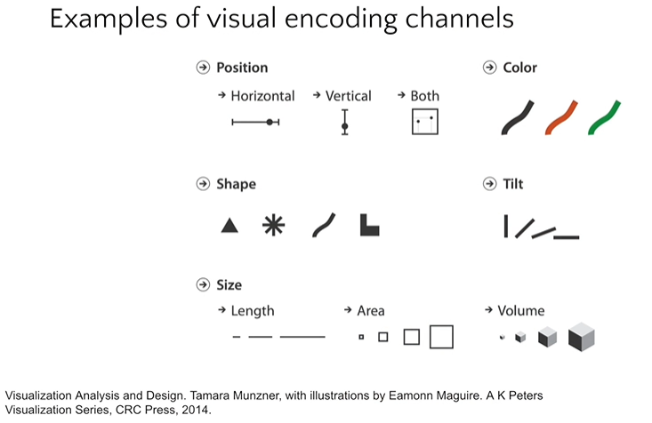8.2.5 Principles of Visual Perception
Leveraging principles of visual perception (the ability to see and interpret surrounding visual information) will help us identify appropriate plot types and design better, more informative graphics. Humans are wired to look for structure, patterns, and logic. Our brains are amazing - they take ambiguous visual information and transform it into something organized, symmetrical, or familiar so we can understand it. But, we don’t process all visual information equally.
8.2.5.1 Visual Magic Tricks
Take a look at the following questions and images.
Which line is bigger?

Which inner circle is bigger?

Do these lines connect?

Is the center bar in this image by Dodek a gradient?
{kind=link}

What shape(s) do you see in this image?

Answers: a) They’re the same length, if you pay careful attention to the scales of the axes! b) The circles are the same size. c) The lines do NOT connect. Hold up a ruler or straight edge and prove it for yourself. d) Nope! It’s a solid color. e) Did you see a vase or two faces?
These visual “magic tricks” work because they capitalize on innate weaknesses in our visual perception.
8.2.5.2 Steven’s Psychophysical Power Law
Research studies by Stanley Smith Stevens and others have shown that we exhibit innate biases in how we perceive magnitude changes in the intensity of various types of stimuli. For example, we perceive the intensity of an electrical shock to a greater degree than its actual, physical intensity would seem to warrant. We’re also poor at accurately perceiving changes in brightness and estimate it to increasing less than it actually does. However, we have near perfect perception of length proportional to its actual increase. This is especially true if lengths are aligned and on the same scale. Knowing this can help us design more intuitively useful plots.

Figure 5.7 from Visualization Analysis and Design by Tamarna Munzner
8.2.5.3 Perception and Encodings
Based on psychophysics, we can rank encodings to help us identify which ones will more accurately allow us to judge differences in relative magnitudes, which is important when working with ordinal, interval or ratio data.
 Jock Mackinlay, 1986, Computer Science ACM Trans. Graph.
Jock Mackinlay, 1986, Computer Science ACM Trans. Graph.
From most to least accurate by magnitude perception:
- Position along a common scale. Spatial position is the easiest feature for us to recognize and evaluate, and unsurprisingly is used in the most common plot types: bar charts, scatterplots.
- Positions along identical but nonaligned scales. Small multiples, grid, lattice, panel, and Rellis charts.
- Length. We can easily recognize proportions and evaluate lengths, especially when they are aligned, such as in bar charts.
- Direction. We recognize directionality fairly easily. Trend charts utilize this to demonstrate changes over time.
- Angle, slope. It’s harder to evaluate angles than length or position. Pie charts can be as efficient as stacked bar charts, unless there are more than 3 parts to the whole. But ask yourself - if there are fewer than 3 or fewer parts, do you really need a visualization?
- Area. Determining the relative magnitude of areas is much harder compared to lengths, and should be used (like in bubble charts) for indicating the relative importance, and not absolute magnitude changes.
- Volume. 3D objects as represented in 2-D space are hard to evaluate. Avoid them. I’m looking at you, exploding 3D pie chart.
- Curvature Perceiving changes in the degree of a curve magnifies the difficulties in detecting direction, angle, and non-aligned lengths.
- Density, color saturation and shading. Color is the least accurate way to convey patterns. Saturation is the intensity of a single hue, and increasing color intensity is intuitively perceived as correlating to an increasing value. But individual hues are hard to compare to one another. Heatmaps along the same color gradient can be a good way to convey an overall picture of change in values over a range. We’ll talk more about color later on.
- Color hue. For data visualizations, color hue is the most challenging encoding to detect changes in magnitude.
8.2.5.4 Evaluating Graphics
“No matter how clever the choice of the information, and no matter how technologically impressive the encoding, a visualization fails if the decoding fails” (Cleveland 1983). But how do we detect if our encodings have failed? Munzner uses the principles of expressiveness and effectiveness to help us evaluate our data visualizations.
The expressiveness of a visual encoding should “express all of, and only, the attributes of the data.” It is violated when we use encodings that do not match our data type or our visualization goals. When it fails, a chart is not only sub-optimal and confusing, it can be incorrect and misleading. Charts can fail the expressiveness test if their encodings imply ordering when there actually is none, or they mis-order a variable.
The effectiveness of a visual encoding addresses how accurately can the interpreter of the chart decode the encodings within it and derive accurate knowledge. According to Munzner, “the importance of the attribute should match the salience of the channel,” meaning we should use channels at the top of the list to encode the variables that are the most important to communicating our data story.
When looking at a plot, can you accurately detect differences is the sizes of the bubbles? Can you discriminate between all of the colors, compare the shades? Can you separate the dimensions of the data?
Taking these principles together, when we want to compare magnitudes of ordinal data (numeric, continuous, or ordered qualitative data - like height, weight, number of children in a family, or a rating), we should use encodings at the top of Mackinlay’s list above. Conversely, for nominal data (categorical or un-ordered qualitative data - like gender), use these identity channels:
- Shape. Glyphs are effective at grouping categorical attributes together. But, be mindful that the more shapes you use, the harder it will be for a viewer to remember what corresponds to which specific data attribute.
- Color. While color can be very effective in data visualizations (see the Gestalt principles below) typically less is more. Apply contrasting colors only to differences in meanings in the data, or to emphasize the main elements. Start with grey, and add color only as necessary. And, be mindful when defining your color palette. Color brewer and Viz Palette provide palettes that optimize our perceptive abilities and design for accessibility. Do a color check - how will a person with colorblindness perceive your graphics?
- Texture. Similar to shape and color, texture can be useful for differentiating between categories or separate areas. Textures can be particularly effective at replacing colors, such as in black and white figures, and for increasing accessibility by reinforcing a color encoding.
Combining channels can result in integral or separable coding pairs, respectively allowing attributes to be perceived holistically or with separate judgments regarding their graphical dimension.

Colin Ware (2019) “Information Visualization”
8.2.5.5 Gestalt Principles
In addition to decoding specific elements, our brains have an amazing ability to create and perceive structure along visual objects. This is commonly referred to as the Gestalt principles of visual perception. This framework, combined with Steven’s Law, can help us think through how to use marks and channels together to create expressive and effective data visualizations:
- Similarity - objects with the same visual properties are assumed to be similar and are grouped together.
- Example: Use design elements such as shape, color, and organization to indicate groupings of the data. In design theory these are called “preattentive features” because we actually see and perceive them before we really think about them. In some experiments it was found to take less than 0.5 seconds for the eye and brain to process a preattentive property of an image.
- Proximity - objects that are close together are perceived as a group.
- Example: Since physical distance connotes similarity, grouping bars on a chart can indicate similarities among their data. Instead of listing it in a legend, directly label data groupings by adding informative text directly onto the graph.
- Continuity - elements that are aligned (on the same line, curve, or plane) are perceived to be more closely related to each other than to other elements.
- Example: It is often easier for us to perceive the groupings if the shapes are curves, rather than lines with sharp edges.
- Enclosure - objects that appear to have a boundary around them (i.e., are found within the same common or enclosed region) are perceived as being related.
- Example: Add line boundaries or shades to group objects.
- Connection - objects that are connected, such as by a line, are perceived as a group.
- Example: Connect different data together to indicate a relationship. This connectedness is highly effective as it often over-rules the other principles for group perception. Every line plot is an example of connectedness.
- Closure - complex arrangements of visual elements are perceived as a single, recognizable pattern.
- Example: Open structures are often perceived as closed, complete and regular.
- Figure and Ground - objects are perceived as either standing out prominently in the foreground (or front figure) of an image, or recede into the background.
- Example: Shading or color blocking can be employed to to distinguish between the more important figure and less important ground features of an image. Place elements of the most importance in the foreground figure.
- Focal Point - whatever stands out visually is perceived as the most important. It will grabs our attention first, and holds it for the longest.
- Example: Use design elements selectively to draw attention to the most important features of the data.
 Gestalt principles for perpetual grouping and figure-ground segregation. From ‘Gestalt Principles for Attention and Segmentation in Natural and Artificial Vision Systems’ by G. Kootstra, N. Bergstrom, D. Kragic (2011).
Gestalt principles for perpetual grouping and figure-ground segregation. From ‘Gestalt Principles for Attention and Segmentation in Natural and Artificial Vision Systems’ by G. Kootstra, N. Bergstrom, D. Kragic (2011).
8.2.6 Accessible Data Visualizations
8.2.6.1 Color
Color can be one of the most challenging - and important - attributes to apply to a plot. Special care must be taken when applying color to our data visualizations to ensure they are accessible to persons with color blindness. Color blindness prevents viewers from distinguishing between certain colors, their brightness, and/or shades of a color. Affecting approximately 1 in 12 men (8%) and 1 in 200 women (0.5%) around the world, it is likely that some viewers of your data visualization will perceive its colors differently.
Overall we’re not doing a good job at using color mindfully in our science communication. If you want to use color, here are some recommendations to keep in mind:
Recommendation 1: Avoid problematic color combinations. The most common types of color blindness makes it hard to tell the difference between red and green (deuteranope and protanope color blindness). Blue-yellow color blindness (tritanope) is less common. Avoid using: red/green, green/brown, green/blue, blue/gray combinations. Many graphing software unfortunately use these combinations as a default and you will have to manually change this on your figures.
To demonstrate why these combinations are problematic, here is a color vision test:
 Crameri, F., Shephard, G.E. & Heron, P.J. The misuse of colour in science communication. Nat Commun 11, 5444 (2020)
Crameri, F., Shephard, G.E. & Heron, P.J. The misuse of colour in science communication. Nat Commun 11, 5444 (2020)
Recommendation 2: Use an online tool to help you pick a colorblind friendly palette depending on your data and visualization needs. Examples include:
- colorbrewer: palettes, color advice for mapping, and good general tips
- coolors

Recommendation 3: Use a colorblindness simulator to check your visualization. Who won’t be able to see the differences you’re trying to display with color? Here are a few simulators:
Recommendation 4: Add textures, symbols, or other channels to reinforce the grouping attributes on your plot.
Source

Here are some more resources to help you use color effectively and mindfully in your data visualizations:
Color & Design:
- Visualization-Aware Color Design: Aesthetic, Perceptual & Functional Constraints
- Common pitfalls of color use
- An experiment showing how mark type influences color perception in data viz
- Textures and patterns for colorblindness
Color Accessibility in R:
8.2.6.2 Alternative text
So far we’ve taken for granted that visualization is an accessible mode of communication, but researchers and audiences alike are not all sighted. RStudio is behind on blind accessibility, but some packages can provide text descriptions and sonification/audification of plots to improve accessibility for non-visual data interaction.
For example, the BrailleR package, has a VI function that wraps around ggplot objects and provides a text-description output. This description is a starting point but it does not summarize the data itself, so it is important to consider also informative figure captions or embedded alternative text so that all viewers are able to interpret the visualization.
Other packages like the sonification package’s sonify function can be used to represent data in audio form. With the function, the x-axis can span sound across time, so that the length of time a sound plays follows the data long the x-axis from left to right; the y-axis can be expressed as pitch, so that the pitch of the sound matches to the values of the data (lower value = lower pitch).
8.2.7 Designing Statistical Graphics
You are now ready to make your plot! You can combine marks and channels to create nearly any plot type, and there are many established types of statistical graphics that you can choose from to showcase your data. Each type has its benefits, and drawbacks, based on how it encodes your data. Match the chart type to your data - and what you want it to show - and not the other way around.
8.2.7.1 Step 1: Identify Your Data Type
Data can be quantitative or qualitative. Quantitative data is either continuous (numerical data like height and weight), or discrete (constrained values, such as the number of children in a family). Qualitative data can be ordered (categories that have a relationship but no meaningful distance between them, such as movie star ratings), or nominal (categories that have no meaningful order, such as gender).
8.2.7.2 Step 2: Determine Your Functional Approach
Ask ask yourself:
- What are the tasks you want the visual to support?
- Showing how values compare to each other? How the data are distributed? How they are composed? How values relate?
- What specific visual best supports those tasks?
- What do you expect people to naturally do in their “visual queries” as they explore the plot?
- How can you modify the graphical marks and channels to support faster queries?
8.2.7.3 Step 3: Select a Plot Type
Now that you’ve identified your data types and what you need your visualization to show, explore your different chart type options! Start with this nifty tool by from Data to Viz. Select your data type(s) and click through for the pros, cons, and alternate options for a bevy of charts.
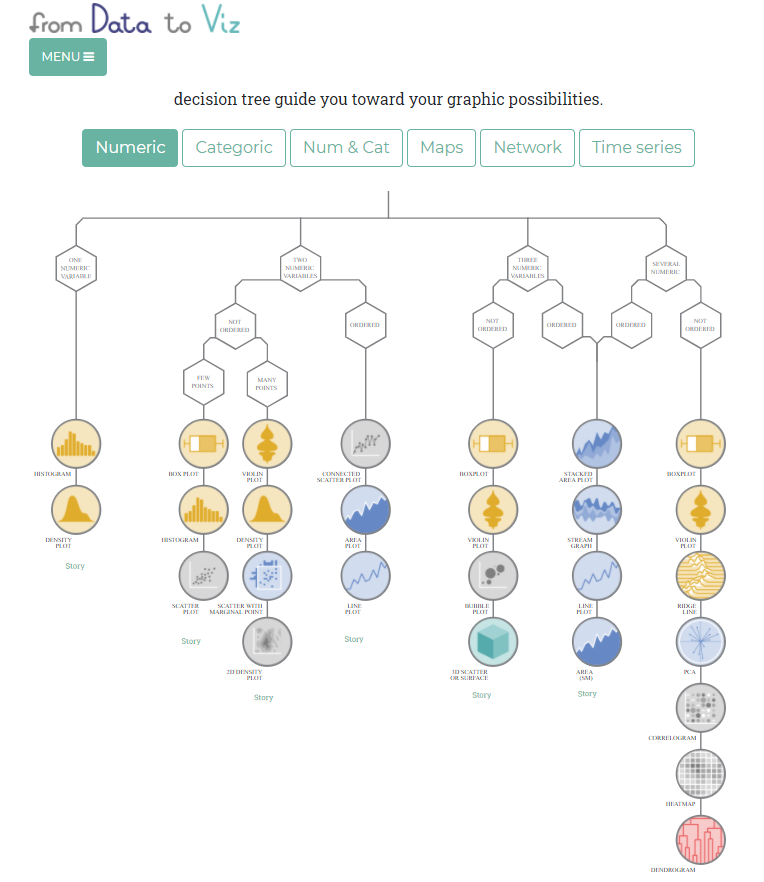
For example, if you want to enable accurate comparisons of individual quantitative values and their relationships, try a scatterplot or a chart with lines or bars sitting aligned on a single axis.
The following list contains an overview of some of the most common plot types you may encounter:
Single quantitative variables are plotted to show the frequency distribution of the data. While histograms are the most common density plots, a single quantitative variable can also be plotted using a rug plot/strip chart, boxplot, or violin plot (described below, where they’re most commonly employed).
Two quantitative variables can be plotted using a:
- Scatterplot - each axis encodes the values of a different quantitative variable, and individual data are represented as points (or dots) on the chart.
- Line plot - data points are connected by straight lines. Line-scatter plots are are common for time series or trend data.
One quantitative + one qualitative variable are suitable for a:
- Bar chart - bars represent the amount of data in different categories of a variable. One axis encodes the frequencies of the quantitative data, and the other axis the categories of the qualitative data.
- Boxplot - shows the median, quartiles, and bounds of your data.
- Violin plot - in essence, a boxplot that also shows the distribution of your quantitative variable.
- Word cloud - these eye-catching visualizations display a list of words with their font size corresponding to their importance. But, they require huge sample sizes and are not very useful as they often distort reality. For example, long words will look more prominent just because they have more letters and cover more area - our eyes don’t intuitively parse out word height from length.
- Pie chart - uses relative frequencies to show how large each category is in relation to the whole. Pie charts are grudgingly listed here because you will see them in the wild, but resist the temptation to use them! Based on our visual perception, pie charts are inherently problematic because they encode values as visual attributes. Pie charts encode data as the area of each slice, as well as the angle that it forms in the center of the pie, making it difficult to easily perceive and compare differences. Over 492 posts on WTF Visualizations are tagged as pie charts. Almost any other chart type is better than a pie chart.
Other complex plot types you may encounter that layer additional marks and channels on the above chart types are:
- Lollipop chart - a dot chart where the dots are connected by lines to an axis.
- Mosaic plot - also called a treemap, these plots display hierarchical data as sets of nested rectangles sized proportionately to their values.
- Bubble plots - scatterplots where the size of a dot corresponds to a third numerical or ordered categorical value.
- Radar plots / star chart - line plots where each variable has its own axis and all axes are joined at the center of the figure.
- Network diagrams - also called graphs, these plots show connections (edges) between entities (nodes). To learn more about network diagrams, check out DataLab’s network toolkit and network analysis workshop.
Google also has an interactive plot gallery. And this Stack Exchange post has even more chart type resources.
But remember, some encodings are more difficult to accurately decode. When in doubt, stick to simple figures with points and lines.
Aside - what about maps?! Geospatial data visualization by nature is complex and encodes a lot of attributes. Interested in learning more? Check our DataLab’s Spatial Sciences research and learning cluster and workshops.
8.2.8 Tips for Better Plots
Making effective data visualizations takes practice and experience. The more plots you look at, the more you will intuitively recognize what works - and what doesn’t - for data visual storytelling. One takeaway I hope you discover is the need to avoid unnecessary complexities. If the “story” is simple, keep it simple. If the “story” is complex, make it look simple. Below are some tips to help achieve those goals.
8.2.8.1 Get Rid of Chartjunk
An easy way to instantly improve your plots is to eliminate superfluous material. Extra tick marks and grid lines; unnecessary text and arrows; decimal places beyond the measurement error of the level of difference; cute little butterfly clip art: this chartjunk has no meaning and it clutters up a chart, making it hard for your viewer to see what’s most important - your data. The amount of ‘ink’ on your figure should directly correspond with the amount of data you present. If it doesn’t, you have a lot of chartjunk. (Evidence #10298 that pie charts are never a good choice.)
Try these de-cluttering steps to improve your charts:
- Shift from center to left-justified text
- Retain white space
- Clear contrasts
- Remove chart borders
- Remove (or strongly mute) gridlines
- Remove data markers and point labels (unless they are important)
- Remove unnecessary polygon filling
- Cleanup and rename axis labels to be intuitive
- Replace the title with something informative
- Label the data directly using the principle of proximity
- Leverage consistent color and other aesthetics
Creating visual order and reducing chartjunk will dramatically improve your graphic by helping your data stand out.
8.2.8.2 Facilitate Comparisons
- Avoid having the graph elements interfere with the data
- Juxtapose or supepose plots (using the same scales)
- Use visually prominent symbols
- Avoid over-plotting; try jittering, or smoothing
- Don’t change a scale mid-axis
- Use only one scale on one axis
- Use color, judiciously
- Avoid jiggling the baseline
- Don’t distort the data; take care when selecting the encodings
A common mistake is to use more encodings than there are dimensions of the data. If you data only has two dimensions (say number of students in STEM by gender identity), your figure could reasonably use points, rarely area, and never volume. (I’m looking at you, 3D pie chart.)
8.2.8.3 Create Information-Rich Plots
Data visualizations cannot exist without text. They require context to infer meaning. Ask yourself:
- Does the caption describe what has been graphed? Does it draw attention to the important features? Describe the conclusions drawn by the graph?
- Are the legends and labels clear and intuitive?
- Are important reference lines and points labeled?
8.2.8.4 Don’t Distort the Data
There’s a bestselling book called “How to Lie with Statistics”. Written by the journalist (and not a statistician) Darrell Huff in 1954, the book focuses on how decisions we make in selecting the data and analysis method, along with errors in interpretation, can generate incorrect conclusions. Similarly, visualization principles can be mis-applied when graphing such that the takeaway message from a graphic distorts reality. Review your plots to make sure they both tell, and show, the truth.
8.2.8.5 Practice
Just as an author edits before publishing the novel, and an artist sketches before making the masterpiece, plotting is an iterative process. Proofread for clarity and consistency. Check whether your plots pass the expressiveness and effectiveness tests. Does a viewer draw the same conclusions from the figure that you do?
Here’s a [cheat sheet checklist from this reader](https://docs.google.com/document/d/1rwoa8XPgvTKHE5Weh9RhrO8igfJ6E8bqyZtddZpwomc/edit?usp=sharing] to help you design and improve your data visualizations. Happy plotting!
8.2.9 References and Additional Resources
8.2.9.1 Articles
Mickinlay, Jock. 1986. Automating the design of graphical presentations of relational information. ACM Transactions on Graphics. https://doi.org/10.1145/22949.22950
Cleveland, William S. & Kleiner, Beat. 1975. A Graphical Technique for Enhancing Scatterplots with Moving Statistics. In Proceedings of the Annual Meeting. Atlanta, GA.
Fisher, Ronald Alymer. (1915). Theory of Statistical Estimation. Proceedings of the Cambridge Philosophical Society. 22. 700-725.
8.2.9.2 Websites
Milestones in the history of thematic cartography, statistical graphics, and data visualization
8.2.9.3 Books and Chapters
Cleveland, William. 1994. The elements of graphing data, 2nd edition. Hobart Press.
Drucker, J. 2014. Graphesis: Visual Forms of Knowledge Production. Harvard UP. Cambridge, MA.
Friendly, M. 2007. A Brief History of Data Visualization. In Handbook of Computational Statistics: Data Visualization. III. Springer-Verlag. Heidelberg. 1-34. Munzner, Tamara.2014. Visualization analysis and design
Huff, Darrell. 1954. How to Lie with statistics. W. W. Norton & Company. New York.
Tufte, Edward R. 1983. The Visual Display of Quantitative Information. Graphics Press. Cheshire, CT.
Wainer, Howard. 2007. Graphic discovery: a trout in the milk and other visual adventures
Wilkinson, Leland. 2005. The Grammar of Graphics, 2nd ed.. Springer. New York. Yau, Visualize this: The flowing data guide to design, visualization, and statistics
8.2.9.4 Historical Books
Bertin, Jacques. 1983. Semiology of Graphics. University of Wisconsin Press. Madison, WI. (trans. W. Berg) 1967
Descartes, Réne. 1637. La Géométrie. In Discours de la Méthode. Essellier. Paris.
Minard, Charles Joseph. 1861. Des Tableaux Graphiques et des Cartes Figuratives. E. Thunot et Cie. Paris.
Playfair, William. 1786. Commercial and Political Atlas: Representing, by Copper-Plate Charts, the Progress of the Commerce, Revenues, Expenditure, and Debts of England, during the Whole of the Eighteenth Century. Corry. London.
Snow, John. 1855. On the Mode of Communication of Cholera. (n.p.). London.
Tukey, John Wilder. 1977. Exploratory Data Analysis. Addison-Wesley. Reading, MA.
Tukey, John Wilder. 1960. A survey of sampling from contaminated distributions. In Contributions to Probability and Statistics: Essays in Honor of Harold Hotelling (I. Olkin et al., eds.) 448–485. Stanford Univ. Press.
8.3 Data Viz with ggplot in R
8.3.1 R Graphics Overview
There are three popular systems for creating visualizations in R:
- The base R functions (primarily the
plotfunction) - The lattice package
- The ggplot2 package
These three systems are not interoperable! Consequently, it’s best to choose one to use exclusively. Compared to base R, both lattice and ggplot2 are better at handling grouped data and generally require less code to create a nice-looking visualization.
The ggplot2 package is so popular that there are now knockoff packages for other data-science-oriented programming languages like Python and Julia. The package is also part of the Tidyverse. Because of these advantages, we’ll use ggplot2 for visualizations in this and all future lessons.
8.3.2 The Grammar of Graphics
ggplot2 has detailed documentation and also a
cheatsheet.
The “gg” in ggplot2 stands for grammar of graphics. The idea of a grammar of graphics is that visualizations can be built up in layers. In ggplot2, the three layers every plot must have are:
- Data
- Geometry
- Aesthetics
There are also several optional layers. Here are a few:
| Layer | Description |
|---|---|
| scales | Title, label, and axis value settings |
| facets | Side-by-side plots |
| guides | Axis and legend position settings |
| annotations | Shapes that are not mapped to data |
| coordinates | Coordinate systems (Cartesian, logarithmic, polar) |
| themes | Display of non-data elements |
8.3.2.1 Making a Plot
For the plotting examples, let’s take the wine reviews data that we have been working with, and subset it to focus in on Cabernet Sauvignon from the Central Valley.
wine_revs <- read.csv("data/wine_enthusiast_rankings.csv")
wine_cv <- wine_revs[wine_revs$region_2 == "Central Valley" &
wine_revs$variety == "Cabernet Sauvignon",]Next we need to load ggplot2. As always, if this is your first time using the
package, you’ll have to install it. Then you can load the package:
What kind of plot should we make? It depends on what data we want the plot to show. Let’s make a plot that shows the price of the wine against the points awarded to that wine by the reviewers. Both the price and the points are recorded as numbers. A scatter plot is a good choice for displaying two numeric features. Later we’ll learn about other options, but for now we’ll make a scatter plot.
Layer 1: Data
The data layer determines the data set used to make the plot. ggplot and most other Tidyverse packages are designed for working with tidy data frames. Tidy means:
- Each observation has its own row.
- Each feature has its own column.
- Each value has its own cell.
Tidy data sets are convenient in general. A later lesson will cover how to make an untidy data set tidy. Until then, we’ll take it for granted that the data sets we work with are tidy.
To set up the data layer, call the ggplot function on a data frame:

This returns a blank plot. We still need to add a few more layers.
Layer 2: Geometry
The geometry layer determines the shape or appearance of the visual elements of the plot. In other words, the geometry layer determines what kind of plot to make: one with points, lines, boxes, or something else.
There are many different geometries available in ggplot2. The package provides
a function for each geometry, always prefixed with geom_.
To add a geometry layer to the plot, choose the geom_ function you want and
add it to the plot with the + operator:
## Error in `geom_point()`:
## ! Problem while setting up geom.
## ℹ Error occurred in the 1st layer.
## Caused by error in `compute_geom_1()`:
## ! `geom_point()` requires the following missing aesthetics: x and yThis returns an error message that we’re missing aesthetics x and y. We’ll
learn more about aesthetics in the next section, but this error message is
especially helpful: it tells us exactly what we’re missing. When you use a
geometry you’re unfamiliar with, it can be helpful to run the code for just the
data and geometry layer like this, to see exactly which aesthetics need to be
set.
As we’ll see later, it’s possible to add multiple geometries to a plot.
Layer 3: Aesthetics
The aesthetic layer determines the relationship between the data and the geometry. Use the aesthetic layer to map features in the data to aesthetics (visual elements) of the geometry.
The aes function creates an aesthetic layer. The syntax is:
aes(AESTHETIC = FEATURE, ...)The names of the aesthetics depend on the geometry, but some common ones are
x, y, color, fill, shape, alpha, and size. There is more information about
and examples of aesthetic names in the documentation.
For example, if we want to put the price feature on the x-axis, the
aesthetic layer should be:
In the aes function, column names are never quoted.
Unlike most layers, the aesthetic layer is not added to the plot with the +
operator. Instead, you can pass the aesthetic layer as the second argument to
the ggplot function:
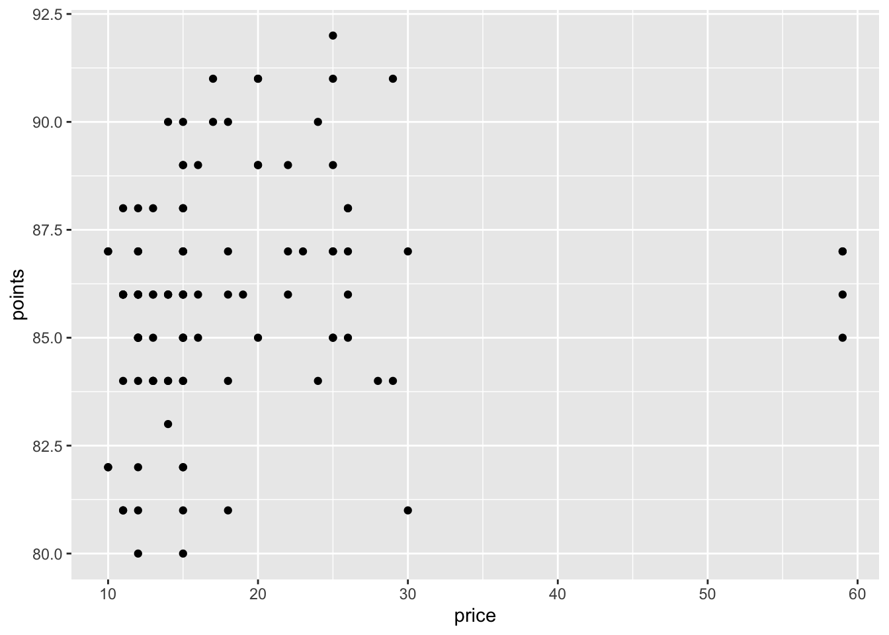
Aesthetics can be informed by data (e.g. the price column), or by constant values (e.g. the color “blue”). Whether the value is informed by the data or constant will determine where to place that piece of information. Constant values should not be placed inside the aesthetic layer. If you set a constant value inside of the aesthetic layer, the results you get might not be what you expect. For instance, suppose we want to make the points blue:
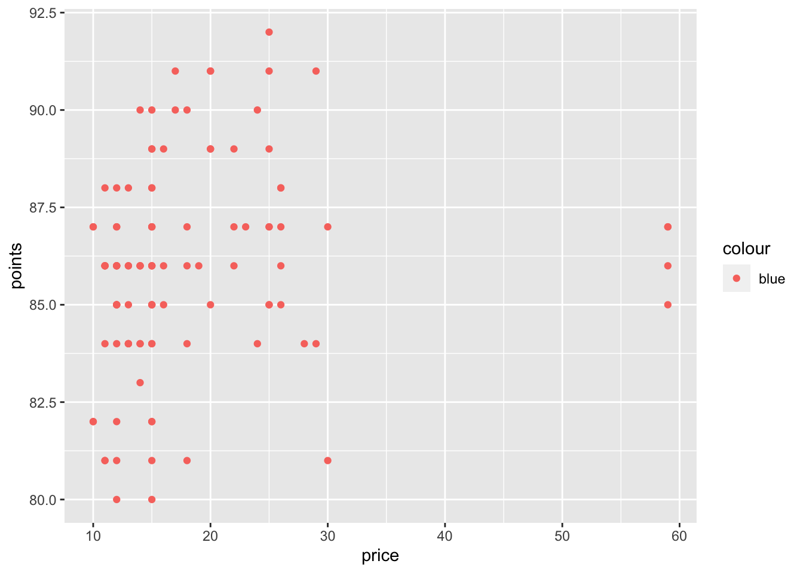
Instead, if you want to set an aesthetic to a constant value, rather than one that’s data dependent, do so outside of the aesthetic layer.
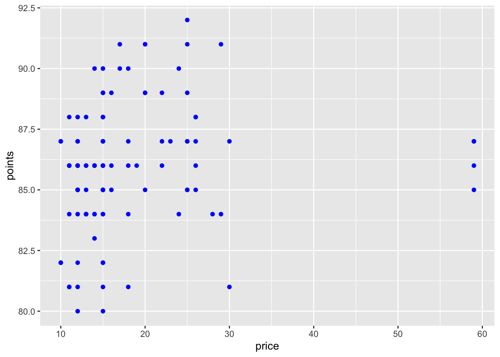
Notice that when we specify the color “blue” (outside of aesthetic mapping), R understands what we mean. There is a long list of color names that R recognizes. But you can also use specific hex codes or palettes like were recommended in the previous section on Accessible Data Visualizations.
Another useful constant aesthetic is the alpha argument, which adjusts the transparency of the points using a range between 0-1 (alpha = 0 is fully transparent and alpha = 1 is not transparent). This can be useful because geom_point will stack points with the exact same values on top of one another, which is hard to tell when they are all completely filled in a certain color (e.g. alpha = 1).
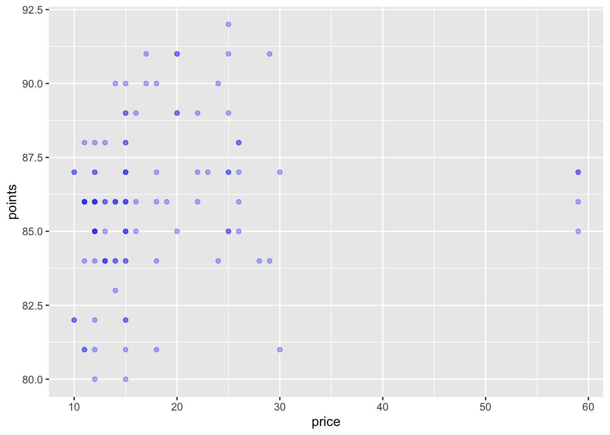
Per-geometry Aesthetics
When you pass an aesthetic layer to the ggplot function, it applies to the
entire plot. You can also set an aesthetic layer individually for each
geometry, by passing the layer as the first argument in the geom_ function. Before we test this out, let’s make a smaller subset of our wines, what we’ll called underrated_wines, based on those that are less than $20 and have scores higher than 85.
## [1] 40Now, let’s first set the aesthetics in the ggplot functions, and add color by
region to take a look at where these wines are from within the Central Valley.
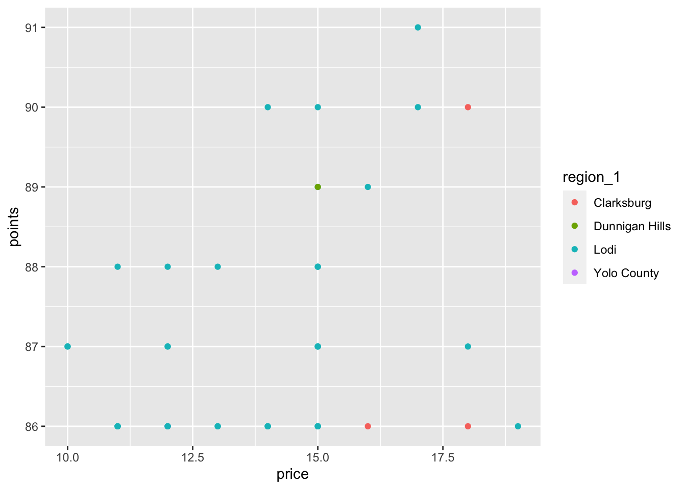
Now let’s add another geometry to better understand the effect of aesthetic
placements. Let’s add a geom_text layer to add labels to the plot based on who
ranked this wine. We need to specify the variables that we want to label with in the aesthetics, and add a new geom layer:
ggplot(underrated_wines, aes(x = price, y = points, color = region_1, label = taster_name)) +
geom_point() + geom_text(size = 3)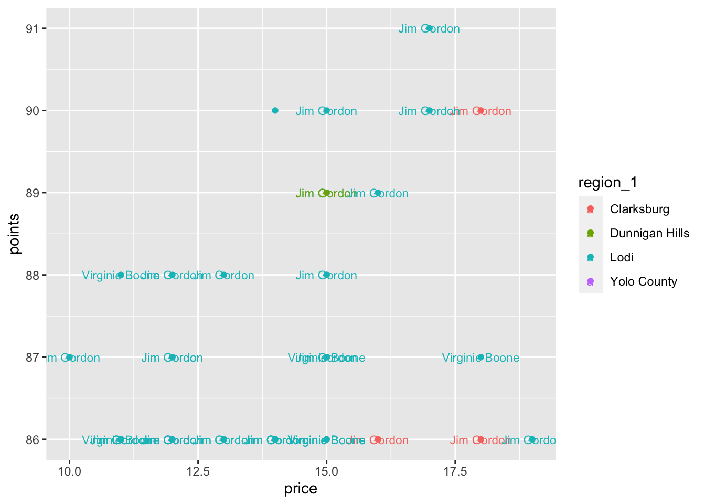
In the example above, both geometries (geom_point and geom_text), take on the same color aesthetic mapping. So, where we put the aesthetics matters. If we move the color aesthetic to the geom_text layer, how does the plot change?
ggplot(underrated_wines, aes(x = price, y = points, label = taster_name)) +
geom_point() + geom_text(aes(color = region_1), size = 3)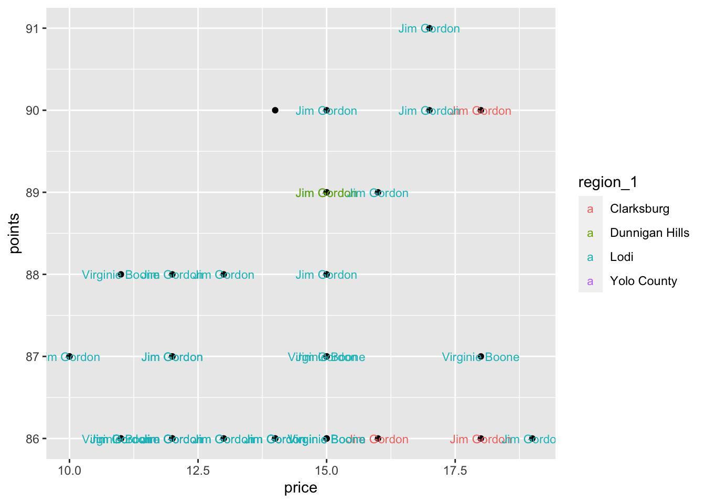
We can also move the color aesthetic to the geom_text layer to experiment:
ggplot(underrated_wines, aes(x = price, y = points, label = taster_name)) +
geom_point(aes(color = region_1)) + geom_text(size = 3)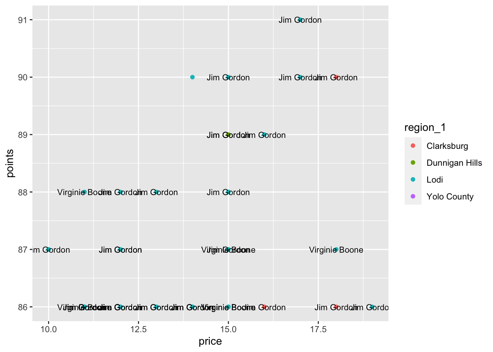
How might we be able to better see all 40 of the observations? Let’s try the position argument within each geometry, where position = position_jitter() will adjust (or “jitter”) the points.
ggplot(underrated_wines, aes(x = price, y = points, label = taster_name)) +
geom_point(aes(color = region_1), position = position_jitter(seed = 1)) +
geom_text(size = 3, position = position_jitter(seed = 1))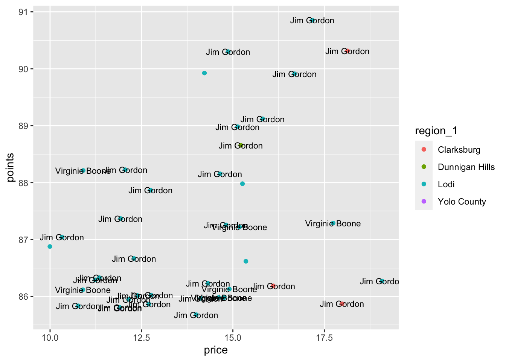
Other layers: Scales and themes
The scales layer controls the title, axis labels, and axis scales of the plot.
Most of the functions in the scales layer are prefixed with scale_, but not
all of them.
The labs function is especially important, because it’s used to set the title
and axis labels:
ggplot(wine_cv, aes(x = price, y = points, color = region_1)) +
geom_point() +
labs(title = "Central Valley Cabernet Sauvignon price by wine score points",
x = "Price ($)", y = "Points", color = "Region")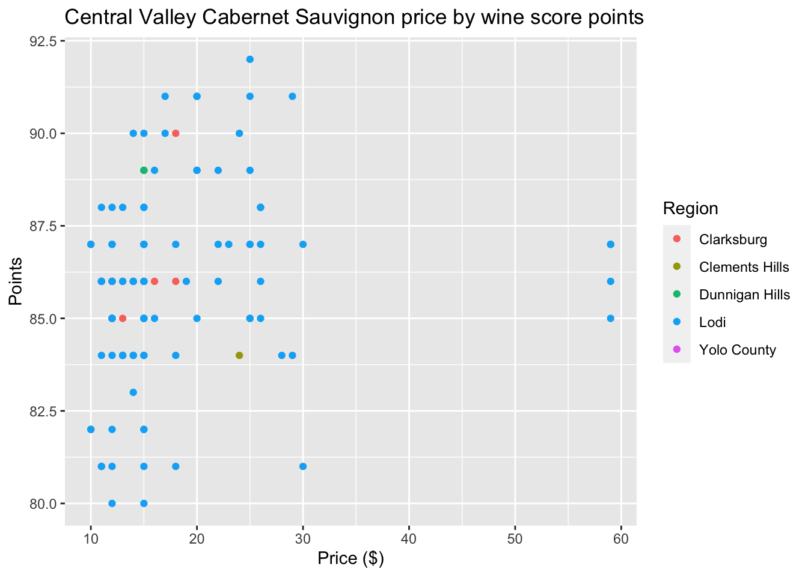
You can add theme layers that change the non-data components of the figure. ggplot2 comes with several themes which can be useful to quickly change the look of your visualization. The complete list of themes is available at https://ggplot2.tidyverse.org/reference/ggtheme.html. theme_classic(), theme_minimal(), and theme_light() are popular.
ggplot(wine_cv, aes(x = price, y = points, color = region_1)) + geom_point() +
labs(title = "Central Valley Cabernet Sauvignon price by wine score points",
x = "Price ($)", y = "Points", color = "Region") +
theme_minimal()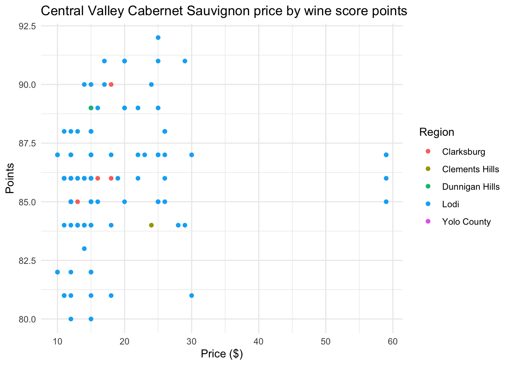
We can also save ggplots as objects:
wine_plot <- ggplot(wine_cv, aes(x = price, y = points, color = region_1)) +
geom_point() +
labs(title = "Central Valley Cabernet Sauvignon price by wine score points",
x = "Price ($)", y = "Points", color = "Region") +
theme_minimal()Note what kind of object this is:
## [1] "list"## [1] "gg" "ggplot"8.3.3 Saving Plots
ggsave
In ggplot2, use the ggsave function to save the most recent plot you created:
The file format is selected automatically based on the extension. Common formats are PNG and PDF.
The Plot Device
You can also save a plot with one of R’s “plot device” functions. The steps are:
- Call a plot device function:
png,jpeg,pdf,bmp,tiff, orsvg. - Run your code to make the plot.
- Call
dev.offto indicate that you’re done plotting.
This strategy works with any of R’s graphics systems (not just ggplot2).
Here’s an example:
8.3.4 Example: Bar Plot
Let’s say we want to plot the number of wines for each region in the Central Valley. A bar plot is an appropriate way to represent this visually.
The geometry for a bar plot is geom_bar. Since bar plots are mainly used to
display frequencies, the geom_bar function automatically computes frequencies
when given mapped to a categorical feature. So we can write:
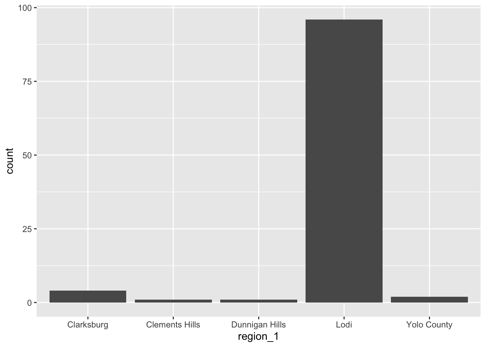
To prevent geom_bar from computing frequencies automatically, set stat = "identity". This is mainly useful if you want to plot quantities you’ve
computed manually on the y-axis.
8.3.4.1 Position adjustment
Just as you added color to group the scatter plot data, you may want to add a color grouping to the bar plot. For bar plots, this will take the fill argument instead of the color argument. (The color argument will outline the bars in a color, whereas the fill argument will fill them in with a default color scheme.)
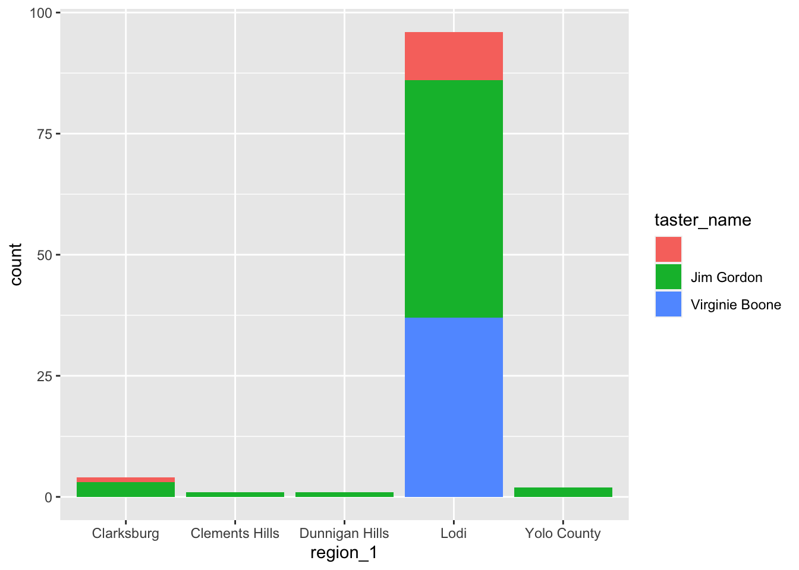
Automatically, geom_bar() positions the grouped colors or fills on top of one another, with the default argument position = "identity". If you want to change the position of the groupings, you can set position = "dodge" to set the groups side-by-side.
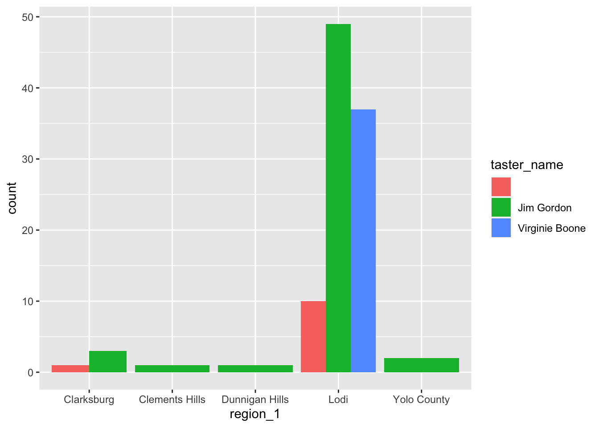
8.3.5 Remembering factors
A feature is categorical if it measures a qualitative category. For
example, the genres rock, blues, alternative, folk, pop are
categories.
R uses the class factor to represent categorical data. Visualizations and
statistical models sometimes treat factors differently than other data types,
so it’s important to make sure you have the right data type. If you’re ever
unsure, remember that you can check the class of an object with the class
function.
When you load a data set, R usually can’t tell which features are categorical. That means identifying and converting the categorical features is up to you. This can be especially helpful to know if you are plotting categories, but want them to have a particular order, other than the default (alphabetical).
Let’s think about which features are categorical in the class wine reviews data.
## 'data.frame': 104 obs. of 14 variables:
## $ X : int 954 2765 3397 4549 4686 4944 5426 5975 6964 8633 ...
## $ country : chr "US" "US" "US" "US" ...
## $ description : chr "Full-bodied and smooth in texture, this generous-tasting wine has lots of ripe plum flavors and sweet-seeming oak accents." "This full-bodied wine has earthy, woodsy aromas, ripe and mature fruit flavors and a broad, almost soft texture"| __truncated__ "This is on the light side, with simple flavors and a juicy, soft texture that shows very little tannin. Aromas "| __truncated__ "A very basic Cabernet Sauvignon, very low in alcohol, with a harshness on the finish." ...
## $ designation : chr "Reserve Bottling" "Judy's Vineyard" "" "" ...
## $ points : int 87 84 84 81 91 86 88 87 86 86 ...
## $ price : num 15 29 13 11 20 11 12 10 13 14 ...
## $ province : chr "California" "California" "California" "California" ...
## $ region_1 : chr "Lodi" "Lodi" "Lodi" "Lodi" ...
## $ region_2 : chr "Central Valley" "Central Valley" "Central Valley" "Central Valley" ...
## $ taster_name : chr "Jim Gordon" "Jim Gordon" "Jim Gordon" "Virginie Boone" ...
## $ taster_twitter_handle: chr "@gordone_cellars" "@gordone_cellars" "@gordone_cellars" "@vboone" ...
## $ title : chr "Archgate Cellars 2014 Reserve Bottling Cabernet Sauvignon (Lodi)" "Housley's Century Oak 2013 Judy's Vineyard Cabernet Sauvignon (Lodi)" "Cable Car 2013 Cabernet Sauvignon (Lodi)" "Harlow Ridge 2011 Cabernet Sauvignon (Lodi)" ...
## $ variety : chr "Cabernet Sauvignon" "Cabernet Sauvignon" "Cabernet Sauvignon" "Cabernet Sauvignon" ...
## $ winery : chr "Archgate Cellars" "Housley's Century Oak" "Cable Car" "Harlow Ridge" ...The numeric columns in this data set (price, points) are all quantitative,
so they’re not categorical. That leaves the character columns.
Because we have subsetted only the Cabernet Sauvignon varieties in the Central Valley,
we know that variables like province, region_2, and variety have no variation.
So that leaves us with the other character variables. Some of these, like winery,
have too many groups to really consider useful:
##
## 337 Wine Cellars Archgate Cellars Black's Station
## 1 1 2
## Cable Car Caricature Christine Andrew
## 2 1 1
## Concrete Cooper Station Cosentino
## 2 2 1
## Criss Cross Cycles Gladiator Earthquake
## 2 1 4
## Five Rows Freakshow Gen5
## 1 2 3
## Harlow Ridge Herman Walters Housley's Century Oak
## 1 1 1
## Insatiable Ironstone James Mitchell
## 1 3 4
## Klinker Brick LangeTwins Lapis Luna
## 1 4 1
## Leonardo Family Vineyards Lodi Estates Loft
## 1 2 1
## Matchbook Mettler Family Vineyards Michael David
## 1 7 6
## Moon Eyes Noble Vines Oak Farm
## 1 3 3
## Oak Ridge Old Soul Pavilion Crossing
## 1 1 1
## Pavillion Crossing Peirano Peltier
## 1 5 3
## Plungerhead Sand Point Scotto Family Cellars
## 1 1 2
## Sharabella Wines Shenanigans Table No. 7
## 1 1 1
## The Crusher The Dancing Fox The Federalist
## 1 1 1
## Toad Hollow Tortoise Creek Twisted Cedar
## 1 7 1
## un4seen Van Ruiten Victor Vineyards
## 1 2 1
## Vino Vargas
## 1Others, such as region_1 and taster_name, have fewer groupings – which is why
we have used them so far for simplifying our visualizations. To reorder our
region_1 variable, lets’ convert to to a factor using the factor.
## [1] Lodi Lodi Lodi Lodi Lodi
## [6] Lodi Lodi Lodi Lodi Lodi
## [11] Lodi Lodi Lodi Clarksburg Lodi
## [16] Lodi Lodi Lodi Lodi Lodi
## [21] Lodi Lodi Lodi Lodi Yolo County
## [26] Lodi Lodi Lodi Lodi Lodi
## [31] Dunnigan Hills Lodi Lodi Lodi Lodi
## [36] Lodi Lodi Lodi Clements Hills Lodi
## [41] Yolo County Lodi Lodi Lodi Lodi
## [46] Lodi Lodi Lodi Lodi Lodi
## [51] Lodi Lodi Lodi Lodi Lodi
## [56] Lodi Lodi Lodi Lodi Lodi
## [61] Lodi Lodi Lodi Lodi Lodi
## [66] Clarksburg Lodi Lodi Lodi Lodi
## [71] Lodi Lodi Lodi Lodi Lodi
## [76] Lodi Lodi Lodi Lodi Lodi
## [81] Lodi Lodi Lodi Lodi Lodi
## [86] Lodi Lodi Lodi Clarksburg Lodi
## [91] Lodi Lodi Lodi Lodi Lodi
## [96] Lodi Lodi Lodi Clarksburg Lodi
## [101] Lodi Lodi Lodi Lodi
## Levels: Clarksburg Clements Hills Dunnigan Hills Lodi Yolo CountyThe categories of a factor are called levels. You can list the levels with
the levels function:
## [1] "Clarksburg" "Clements Hills" "Dunnigan Hills" "Lodi"
## [5] "Yolo County"Notice that factors default the level order to be in alphabetical order. This is also true when we plot characters, which you can notice if we again call the bar plot we made that counted up the regions in our wine reviews data.
8.3.5.1 Assigning factor levels
But what if we wanted to change the order of the x axis to be in descending order? We can change the level assignments. The easier way to do this is to re-write the variable as a factor again, but specify the order of the levels as an argument in the factor function.
wine_cv$region_1_f <- factor(wine_cv$region_1,
levels = c("Lodi", "Clarksburg", "Yolo County",
"Clements Hills", "Dunnigan Hills"))
levels(wine_cv$region_1_f)## [1] "Lodi" "Clarksburg" "Yolo County" "Clements Hills"
## [5] "Dunnigan Hills"Now we can run the same plotting code, but see that the order of the x axis changed, based on the levels of the region_1 factor.
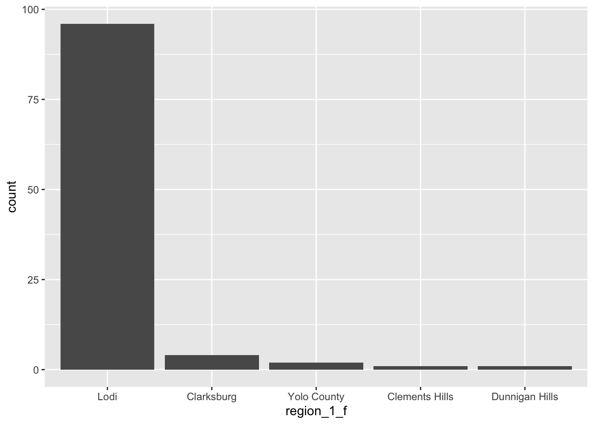
8.3.6 Designing a Visualization
What plot is appropriate?
| Variable | Versus | Plot |
|---|---|---|
| categorical | bar, dot | |
| categorical | categorical | bar, dot, mosaic |
| numerical | box, density, histogram | |
| numerical | categorical | box, density, ridge |
| numerical | numerical | line, scatter, smooth scatter |
If you want to add a:
- 3rd numerical variable, use it to change point/line sizes.
- 3rd categorical variable, use it to change point/line styles.
- 4th categorical variable, use side-by-side plots.
Also:
Always add a title and axis labels. These should be in plain English, not variable names!
Specify units after the axis label if the axis has units. For instance, “Height (ft)”.
Don’t forget that many people are colorblind! Also, plots are often printed in black and white. Use point and line styles to distinguish groups; color is optional.
Add a legend whenever you’ve used more than one point or line style.
Always write a few sentences explaining what the plot reveals. Don’t describe the plot, because the reader can just look at it. Instead, explain what they can learn from the plot and point out important details that are easily overlooked.
Sometimes points get plotted on top of each other. This is called over plotting. Plots with a lot of over plotting can be hard to read and can even misrepresent the data by hiding how many points are present. Use a two-dimensional density plot or jitter the points to deal with over plotting.
For side-by-side plots, use the same axis scales for both plots so that comparing them is not deceptive.